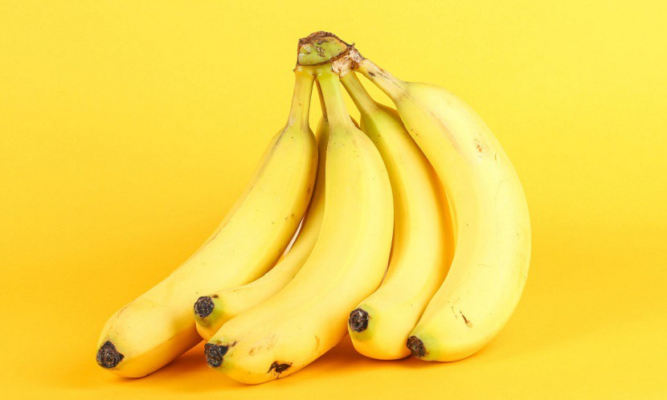
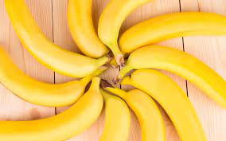

香蕉
香蕉歷史
蕉的原產地有許多不同的說法，一般相信，東南亞的農民最早種植小果野蕉，並將其傳播到東南亞西北部，與原生於印度東部到華南一帶的野蕉發生雜交，形成香蕉這一雜交種，再被人們引種到世界各地，形成現代多種人工栽培品系。
考古學家曾於今日巴布亞新畿內亞境內發現香蕉種植遺址，距今有逾五千年歷史；而又於西非喀麥隆發現有逾千年歷史之香蕉種植遺址。因此巴布亞新畿內亞、東南亞及西非沿岸是目前已知早期的香蕉原產地，但也可能有其他的原產地。在大航海時代，葡萄牙人於西非把香蕉帶到美洲一帶種植，時為十六世紀。在二十世紀很長時間，中美洲和南美洲一帶，是世界最主要香蕉種植國，出口至歐洲以及北美。 幾乎所有種植的香蕉（包括大蕉）均是本雜交種的三倍體栽培品種。可以確認最早是東南亞人民開始雜交並種植香蕉。

收成時間
夏季果就是四十八天採收香蕉，如果冬天的話就要一百二十九天，就是一年四季日照長短的問題， 夏季就是雨水和陽光比較充足發育就會比較快，冬季的話就是陽光比較少又是枯水期發育就會比較慢，同樣種不過四季就是會不一樣採收的日期也會不一樣。
香蕉是一年生，採收完，就要挖丟掉。一棵香蕉裡面有三到五棵苗，留一株看你要在哪一個季節種就留那一棵苗，挖起來重新種在旁邊。，

品種介紹
香蕉在台灣的田間六十幾個品種，不管你是台蕉1號2號3號4號那是傳統香蕉歸類所謂北蕉。 全世界就有六百三十幾種，大部分是鮮食當水果吃，少部分的品種要用料理的。
紅色的香蕉一般全名叫做蘋果蕉或是紅平蕉，炊熟後也會是紅色，它叫蘋果蕉，不管它的全名如何，有六十幾品種，，不管哪個品種，叫芭蕉也可以對，因為世界統稱叫芭蕉，只要有果實可以吃都叫芭蕉屬，如果沒有果實，例如天堂鳥還是月桃葉看花觀賞那就是朱蕉屬，看起來像香蕉葉有花沒有果實能吃，一般北蕉農民都稱土香蕉，香蕉研究所就會稱台蕉1號2號3號4號。
香蕉的種植及管理方式都一樣，不過紅皮蕉和芭蕉就要用比較粗放的不是精緻農業的方式，比較沒那麼用心管理。香蕉頭跟芋頭一模一樣雖然它歸類在果樹但是它是草本植物，在台灣是十月到隔年的四月是枯水期不用灌溉，但是要用噴灌就是所謂噴水。
資料來源: